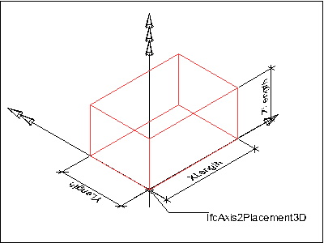
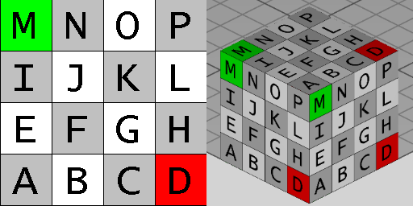

8.8.3.3 IfcBlock
The IfcBlock is a Construction Solid Geometry (CSG) 3D primitive. It is defined by a position and a positve
distance along the three orthogonal axes. The inherited Position attribute has the IfcAxisPlacement3D
type and provides:
- SELF\IfcCsgPrimitive3D.Position: The location and orientation of the axis system for the primitive.
- SELF\IfcCsgPrimitive3D.Position.Location: The block has one vertex at location and the edges are aligned
with the placement axes in the positive sense.
The XLength, YLength, and ZLength attributes define the size of the IfcBlock along the
three axes.
 |
Figure 282 illustrates geometric parameters of a block where the block positioned within its own placement
coordinate system. The values for XLength, YLength, and ZLength are applied to the positive
direction of the X, Y, and Z axis.
|
|
Figure 282 — Block geometry
|
|
NOTE Definition according to ISO/CD 10303-42:1992
A block is a solid rectangular parallelepiped, defined with a location and placement coordinate system. The block is
specified by the positive lengths x, y, and z along the axes of the placement coordinate system, and has one vertex at
the origin of the placement coordinate system.
NOTE Entity adapted from block defined in ISO
10303-42.
HISTORY New entity in IFC2x3.
Texture definition
On each side face, textures are aligned facing upright. On the top and bottom faces, textures are aligned facing
front-to-back. Textures are stretched or repeated to the extent of each face according to RepeatS and
RepeatT.
Figure 283 illustrates default texture mapping with a clamped texture (RepeatS=False and RepeatT=False). The image
on the left shows the texture where the S axis points to the right and the T axis points up. The image on the right
shows the texture applied to the geometry where the X axis points back to the right, the Y axis points back to the
left, and the Z axis points up.
 |
| Side |
Normal |
Origin X |
Origin Y |
Origin Z |
S Axis |
T Axis |
| Left |
-X |
0 |
+YLength |
0 |
-Y |
+Z |
| Right |
+X |
+XLength |
0 |
0 |
+Y |
+Z |
| Front |
-Y |
0 |
0 |
0 |
+X |
+Z |
| Back |
+Y |
+XLength |
+YLength |
0 |
-X |
+Z |
| Bottom |
-Z |
0 |
+YLength |
0 |
+X |
-Y |
| Top |
+Z |
0 |
0 |
+ZLength |
+X |
+Y |
|
|
Figure 283 — Block textures
|
XSD Specification:
<xs:element name="IfcBlock" type="ifc:IfcBlock" substitutionGroup="ifc:IfcCsgPrimitive3D" nillable="true"/>
<xs:complexType name="IfcBlock">
<xs:complexContent>
<xs:extension base="ifc:IfcCsgPrimitive3D">
<xs:attribute name="XLength" type="ifc:IfcPositiveLengthMeasure" use="optional"/>
<xs:attribute name="YLength" type="ifc:IfcPositiveLengthMeasure" use="optional"/>
<xs:attribute name="ZLength" type="ifc:IfcPositiveLengthMeasure" use="optional"/>
</xs:extension>
</xs:complexContent>
</xs:complexType>
EXPRESS Specification:
 EXPRESS-G diagram
EXPRESS-G diagram
Attribute Definitions:
| XLength | : |
The size of the block along the placement X axis. It is provided by the inherited axis placement through SELF\IfcCsgPrimitive3D.Position.P[1].
|
| YLength | : |
The size of the block along the placement Y axis. It is provided by the inherited axis placement through SELF\IfcCsgPrimitive3D.Position.P[2].
|
| ZLength | : |
The size of the block along the placement Z axis. It is provided by the inherited axis placement through SELF\IfcCsgPrimitive3D.Position.P[3].
|
Inheritance Graph:
Examples:
 Link to this page
Link to this page